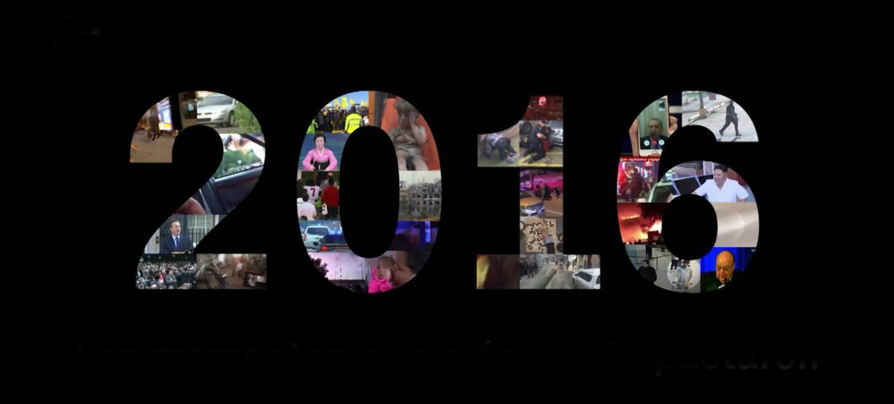
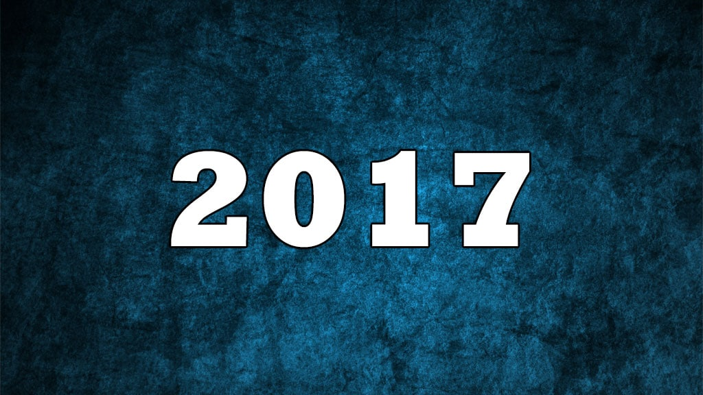
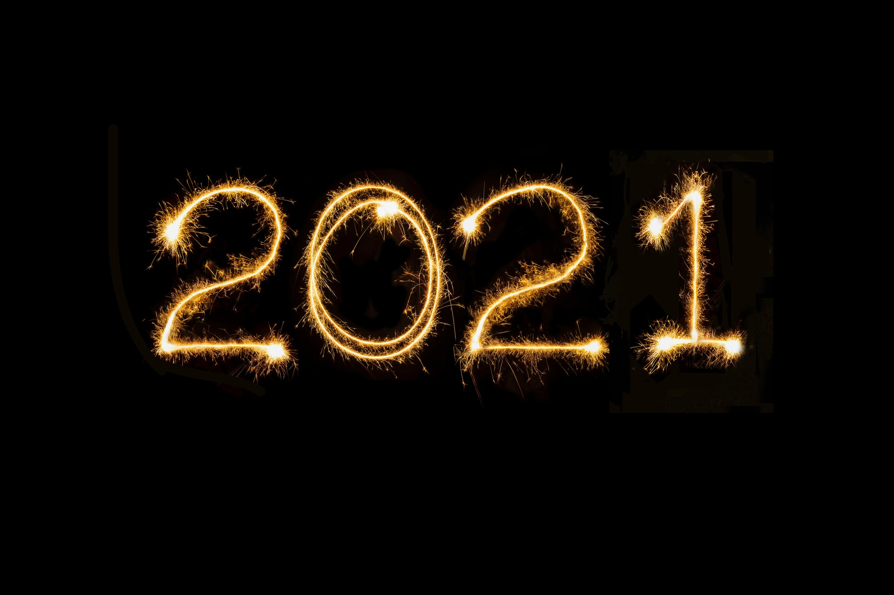
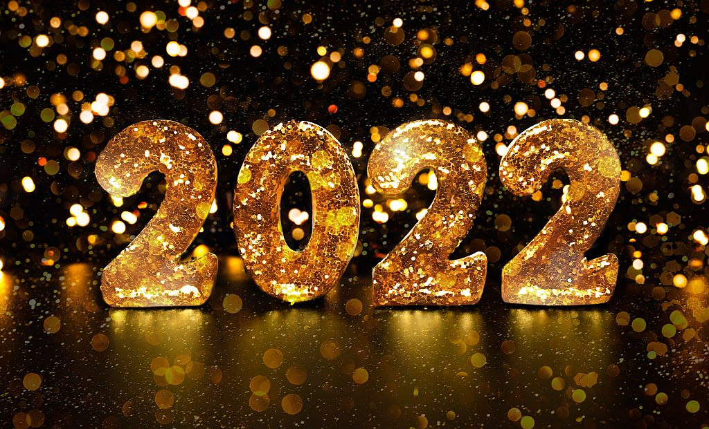

Hola Bienvenido al Año 2015
2015 (MMXV) fue un año común comenzado en jueves en el calendario gregoriano de los Años 2010. Fue también el número 2015 anno Dómini, de la era cristiana o de la era común, además del decimoquinto del tercer milenio y el sexto de la década de los años 2010. De acuerdo con el zodiaco chino, fue el año de la oveja bajo la madera como elemento.
Hola Bienvenido al Año 2016
2016 (MMXVI) fue un año bisiesto comenzado en viernes del calendario gregoriano. Fue también el número 2016 del anno Dómini, era común o la designación de era cristiana, además del decimosexto del tercer milenio y el séptimo de los años 2010.
Hola Bienvenido al Año 2017
2017 (MMXVII) fue un año común comenzado en domingo según el calendario gregoriano de los años 2010. La ONU (Organización de las Naciones Unidas) declaró este año como el Año Internacional del Turismo Sostenible para el Desarrollo, con la intención de promover esa actividad económica creando conciencia de la importancia de impulsarla y desempeñarla de manera responsable.1
Hola Bienvenido al Año 2018

2018 (MMXVIII) fue un año común comenzado en lunes en el calendario gregoriano. Fue también el número 2018 anno Dómini o de la designación de la Era Cristiana, además del décimo octavo del tercer milenio y el noveno y penúltimo de la década de los 2010.
Hola Bienvenido al Año 2019

2019 (MMXIX) fue un año común comenzado en martes en el calendario gregoriano. Fue también el número 2019 anno Dómini o de la designación de la Era Cristiana, además el décimo noveno año del tercer milenio y el último del decenio de los Años 2010. Fue designado como:
Hola Bienvenido al Año 2020
2020 (MMXX) fue un año bisiesto comenzado en miércoles en el calendario gregoriano. A su vez, fue el número 2020 anno Dómini o de la designación de era común, el vigésimo año del tercer milenio, el último año de la segunda década del siglo xxi y el primero del decenio de los años 2020.
Hola Bienvenido al Año 2021
2021 (MMXXI) fue un año común comenzado en viernes en el calendario gregoriano, el número 2021 Anno Domini. Fue el vigésimo primer año del siglo xxi y del III milenio, el primer año de la tercera década del siglo xxi y el segundo de los años 2020.
Hola Bienvenido al Año 2022
2022 (MMXXII) fue un año común comenzado en sábado en el calendario gregoriano, el número 2022 anno Domini, además del vigésimo segundo año del siglo xxi y del iii milenio. Fue el tercer año del decenio de los 2020 y el segundo de la 3.ª década del siglo xxi. El año 2022 fue:
Hola Bienvenido al Año 2023
2023 (MMXXIII) es el año actual. Es un año común comenzado en domingo en el calendario gregoriano. Es también el número 2023 anno Domini o de la designación de era cristiana, además de ser el vigésimo tercer año del siglo xxi y del tercer milenio. De igual manera, es el tercer año de la tercera década del siglo xxi y el cuarto del decenio de los 2020.